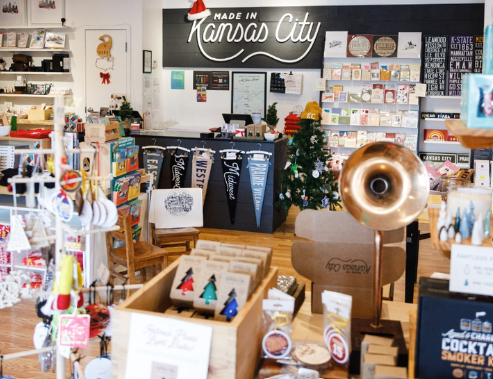
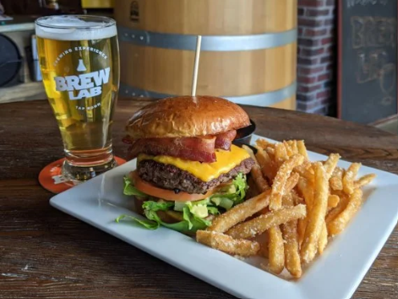
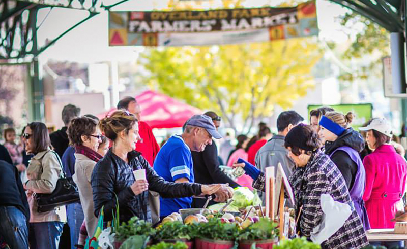
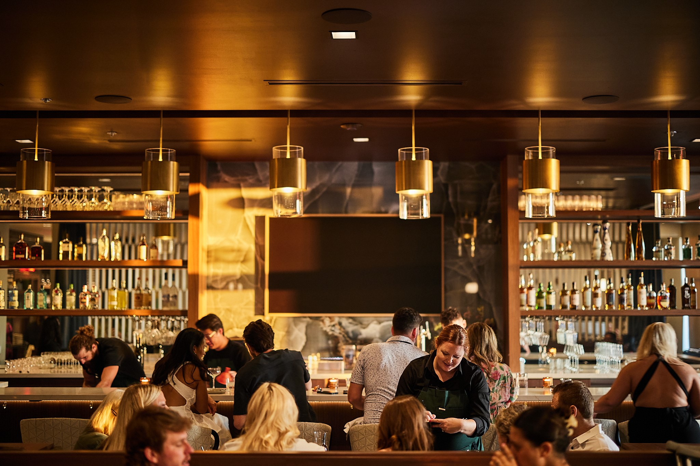

Downtown Overland Park
Live at the Center of It All
You'll find us just off 79th and Metcalf at:
7900 Conser Street
Overland Park, KS 66204
With a walkable location steps from the award-winning Overland Park Farmers' Market, locally owned shops, cozy coffee spots, and some of the best food in the metro. Urban Edge places you in one of the most sought-after neighborhoods in the KC area. Enjoy the charm of a small-town vibe with the energy of a growing downtown.
Whether you're into art walks, wine walks, yoga in the park, or catching live music on a summer night, Downtown OP has something for every mood and moment. Explore over 300+ local businesses, take a cooking class at The Culinary Center of Kansas City, or just enjoy a Saturday strolling through the farmers market with a coffee in hand.
When you live at Urban Edge, you're not just getting a place to live — you're getting the community, culture, and character of Downtown Overland Park, right outside your front door.




Let's Explore The Neighborhood
Downtown Bites
- Strang Hall - Chef-driven food hall energy
- Vionas Italian Bistro - Cozy red-sauce classics, fresh pastas, total date-night potential.
- Brew Lab - Brewery + kitchen = flights, burgers, and laid-back hangout vibes.
- Tiki Taco - Fast-casual tacos and burritos with a playful, street-style twist.
Caffeine, Close By
- Parisi - espresso bar feel; dialed-in shots and sleek sips.
- Homer's Coffee House - Community staple; comfy seats, study vibes, and live-music nights.
- Café Equinox - Plants + lattes; sip, then wander the greenhouse.
- Pilgrim Coffee Company - Third-wave feel; comfy spot for long chats or laptop time.
Shop the District
- Studio 79 Boutique - pieces for him + her; local-boutique cool.
- Teal Lotus - women's styles, accessories, and giftable finds.
- Newton James - menswear; elevated essentials, classic to casual.
- We Got Your Back Apparel - tees, hats, and custom prints.
Raise a Glass
- Maloney's Sports Bar & Grill - hangs, wall-to-wall screens, late-night energy.
- Vintage '78 Wine Bar - wine flights + bites; huge by-the-glass list.
- Brew Lab - beers, flights, and a laid-back taproom feel.
- The Peanut on Santa Fe - bar legend; famous wings, open late.